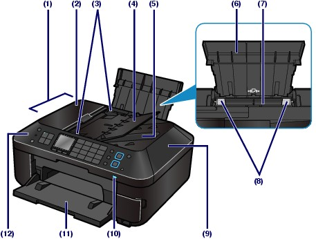
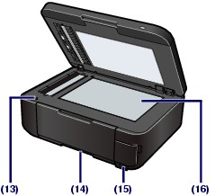
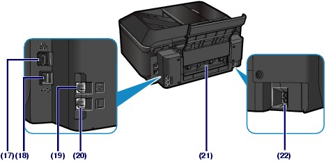
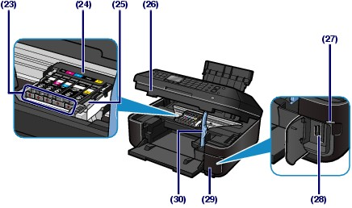
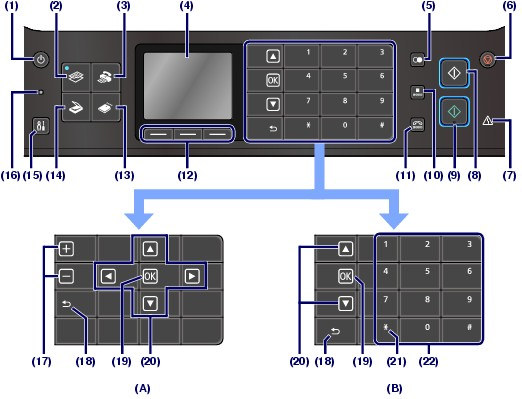

Front View
Front View
(1) ADF (Auto Document Feeder)
Load a document to copy, scan, or fax. The documents loaded in the Document Tray are scanned automatically one sheet at a time.
See Loading Originals in the ADF.
(2) Document Feeder Cover
Open when clearing jammed documents.
(3) Document Guides
Adjust these guides to match the width of document in the ADF.
(4) Document Tray
Open to load a document in the ADF. You can load two or more sheets of document of the same size and thickness. Load the document with the side you want to scan facing up.
(5) Document Output Slot
Documents scanned from the ADF are delivered here.
(6) Paper Support
Raise and tip back to load paper in the Rear Tray.
(7) Rear Tray
Load photo paper or envelopes which you can use on the machine. Two or more sheets of the same size and type of paper can be loaded at the same time, and fed automatically one sheet at a time.
See Loading Paper.
(8) Paper Guides
Slide to align with both sides of the paper stack.
(9) Document Cover
Open to load an original on the Platen Glass.
(10) Wi-Fi lamp
Lights or flashes blue to indicate the wireless LAN status.
Lights: Wireless LAN active is selected.
Flashes: Printing or scanning over wireless LAN. Also flashes while searching for wireless LAN access point during setup and when connecting to the access point.
(11) Paper Output Tray
Opens automatically when printing or copying starts and printed paper is ejected.
(12) Operation Panel
Use to change the settings of the machine or to operate it.
See Operation Panel.

(13) Scanning Unit Detection Button
Locks the Scanning Unit (Cover) while the Document Cover is open. This button is pressed down when the Document Cover is closed, so that you can open the Scanning Unit (Cover). (You do not need to touch this button.)
For information on the Scanning Unit (Cover), see Scanning Unit (Cover).
(14) Cassette
Load A4, B5, A5, or Letter-sized plain paper and insert it into the machine. Two or more sheets of the same size of plain paper can be loaded at the same time, and fed automatically one sheet at a time.
See Loading Paper.
(15) Direct Print Port
Connect a PictBridge compliant device such as a digital camera or the optional Bluetooth Unit BU-30* to print directly.
See Printing Photos Directly from Your Digital Camera or Mobile Phone.
You can also insert a USB flash drive to this port.
See Inserting the USB Flash Drive.
* The Bluetooth Unit is not available in some countries or regions depending on the local laws and regulations. For details, contact the service center.
 Warning Warning
|
 Important Important
|
(16) Platen Glass
Load an original to copy, scan, or fax.
Rear View
(17) Wired LAN Connector
Plug in the LAN cable to connect the machine to a LAN.
(18) USB Port
Plug in the USB cable to connect the machine with a computer.
(19) External Device Jack
Connect an external device such as telephone or answering machine.
(20) Telephone Line Jack
Connect the telephone line.
(21) Rear Cover
Detach to remove jammed paper.
(22) Power Cord Connector
Plug in the supplied power cord.
| Important
|
Inside View
(23) Ink lamps
Light or flash red to indicate the ink tank status.
(24) Print Head Holder
Install the Print Head.
(25) Print Head Lock Lever
Locks the Print Head into place.
| Important
|
(26) Scanning Unit (Cover)
Scans originals. Open it to replace ink tanks, to check ink lamps, or to remove jammed paper inside the machine. When opening the Scanning Unit (Cover), lift it with the Document Cover closed.
(27) Access lamp
Lights or flashes to indicate the memory card status.
See Inserting the Memory Card.
(28) Card Slot
Insert a memory card.
See Inserting the Memory Card.
(29) Card Slot Cover
Open to insert a memory card.
See Inserting the Memory Card.
(30) Scanning Unit Support
Holds the Scanning Unit (Cover) while it is open.
 Note Note
|
Operation Panel
(A) Displaying select/set buttons
(B) Displaying Numeric buttons
| Note
|
(1) ON button
Turns the power on or off. Before turning on the power, make sure that the Document Cover is closed.
| Important Disconnecting the power plug
|
| Note
|
(2) COPY button
Switches the machine to the copy mode.
See Basic Operation in Each Mode.
(3) FAX button
Switches the machine to the fax mode.
See Basic Operation in Each Mode.
(4) LCD (Liquid Crystal Display)
Displays messages, menu items, and the operational status. You can also preview photos on the LCD before printing.
| Note
|
(5) Redial/Pause button
Displays the list of numbers dialed with the Numeric buttons to redial the selected number. You can also use this button to enter pause time between or after numbers when dialing or registering numbers for example international calls.
(6) Stop button
Cancels operation when print, copy, scan, or fax transmission/reception job is in progress.
(7) Alarm lamp
Lights or flashes orange when an error occurs, such as paper-out or ink-out.
(8) Black button
Starts to make black & white copy, scan, fax transmission, etc. This button lights blue when available.
(9) Color button
Starts to make color print, copy, scan, fax transmission, etc. This button lights blue when available.
(10) Coded Dial button
Displays the coded speed dial list or telephone number search list on the coded speed dial screen. You can dial a recipient from the list.
(11) Hook button
Enables you to dial using the Numeric buttons on the machine without picking up the handset. This button is also used when using an information service, etc.
(12) Function buttons
Used to select an item displayed at the bottom of the LCD.
See Selecting a Menu or Setting Item.
(13) CARD button
Switches the machine to the card mode.
See Basic Operation in Each Mode.
(14) SCAN button
Switches the machine to the scan mode.
See Basic Operation in Each Mode.
(15) Setup button
Displays the setup menu screen.
See Basic Operation in Each Mode.
(16) FAX Memory lamp
Lights when there are received or unsent documents stored in the machine's memory.
(17) [+] [-] buttons
Specifies the number of copies to copy or print.
(18) Back button
Returns the LCD to the previous screen.
This button appears in a different position depending on whether select/set or Numeric buttons are being displayed.
(19) OK button
Finalizes the selection of a menu or setting item, and also used to enter characters.
Resolves an error when printing is in progress or resumes the machine's normal operation after removing jammed paper or to eject documents remaining in the ADF.
This button appears in a different position depending on whether select/set or Numeric buttons are being displayed.
(20)  ,
,  ,
,  , and
, and  buttons
buttons
Used to select a menu or setting item, and also used to enter characters.
These buttons appear in different positions depending on whether select/set or Numeric buttons are being displayed. When Numeric buttons are displayed, the and buttons do not appear.
See Selecting a Menu or Setting Item.
(21) Tone button
Switches to tone dialing temporarily if your machine is connected to a rotary pulse line. This button is also used to dial with the Numeric buttons.
(22) Numeric buttons
Used to enter a fax/telephone number, or the code or the first letter of a name registered to a coded speed dial.
| Note
To change the beep volume, see Machine Settings. |